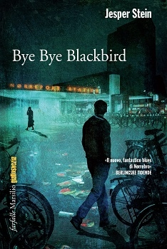

Vi proponiamo l’intervista esclusiva che Jesper Stein, autore danese di thriller di grande successo come Tempo dell’Inquietudine e Bye Bye Blackbird, ha concesso in esclusiva a noi di ThrillerNord. Lo abbiamo incontrato in questi giorni a Milano, in occasione della manifestazione "Noir in Festival". Ci siamo avvicinate a lui con timore reverenziale: ci aspettavamo di trovarci di fronte ad un personaggio freddo e distante e invece Jesper Stein ci ha stupito con il suo sorriso aperto e la sua grande simpatia. Ha risposto a tutte le nostre domande e ci ha parlato del suo lavoro, dei suoi personaggi e di sé stesso, senza filtri e con grande spontaneità.
1) Nei tuoi libri, la città di Copenaghen ed in particolare il quartiere di Norrebro, è sempre in primo piano. Come mai hai scelto questo quartiere così particolare?
Ci sono molte ragioni. La prima è che ho vissuto a Norrebro per circa 25 anni e sono il genere di autore che ama scrivere solo di cose che conosce bene. La seconda ragione è che Norrebro è un quartiere molto particolare e molto diverso dagli altri sei quartieri di Copenaghen dato che è sempre stato teatro di proteste, dimostrazioni e rivolte: nel 1942 Norrebro si ribellò all’occupazione nazista, negli anni ‘70 fu occupato dagli hippy ed in tempi più recenti da squatters e attivisti di estrema sinistra. Qui inoltre, hanno trovato dimora molti stranieri, soprattutto mediorientali. Si tratta di una zona della città multietnica ed estremamente cosmopolita.
Dal punto di vista narrativo avevo bisogno di un luogo adatto in cui collocare mio personaggio principale Axel Steen che, per certi versi, dato il suo carattere ruvido poco incline alla disciplina, è uno lui stesso uno specchio di questo quartiere. Come ho potuto appurare nei dieci anni in cui mi sono occupato di cronaca nera come giornalista, Norrebro è il luogo in cui avvengono più crimini e più omicidi di tutta la Danimarca e quindi rappresenta la location perfetta per un romanzo crime. Ma pur avendo tanti lati oscuri, devo dire che questo quartiere ricco di colori e vitalità è comunque anche un posto piacevole in cui vivere.
2) Sappiamo che prima di diventare scrittore sei stato anche giornalista e critico letterario. Cosa ti ha fatto decidere di iniziare la carriera da scrittore?
Ho desiderato scrivere fin da quando avevo quindici anni. Per molti anni però mi sono bloccato di fronte alle scarse possibilità di vedere pubblicati i miei libri e alla consapevolezza di non avere ancora sufficiente esperienza di vita da raccontare. Ho sempre preso le decisioni importanti con una certa calma: finito il liceo ci ho messo ben dieci anni a decidere di immatricolarmi alla scuola di giornalismo. Ho trascorso questo tempo passando da un’occupazione all’altra in modo piuttosto sconclusionato e dando tantissime preoccupazioni ai miei genitori. Durante gli studi e successivamente nella mia vita professionale, ho finalmente capito di aver fatto la scelta giusta, dato che ho sempre amato esprimermi attraverso l’uso delle parole e del linguaggio. La carriera di giornalista ha arricchito molto la mia vita, soprattutto grazie alla possibilità di viaggiare e di conoscere altre culture. Molte delle esperienze che ho maturato nei miei venti anni da reporter si ritrovano nei libri che ho scritto. In sostanza, devo molto al giornalismo ma in questi anni ho provato il desiderio di cambiare le mie prospettive lavorative e di dedicarmi al mestiere di scrittore a tempo pieno.
3) Ti aspettavi questo successo già dal primo romanzo?
In Danimarca ho avuto successo sin dall’uscita del primo romanzo. E’ stato un crescendo fino all’anno scorso in cui ho vinto un premio molto prestigioso. Ovviamente non me lo aspettavo. Quando scrivi il tuo primo romanzo, tutta la tua attenzione è focalizzata nel terminare la stesura e a trovare un editore disposto a pubblicare il tuo lavoro. Quando spedii il mio primo libro alle quattro maggiori case editrici del Paese mi risposero tutte nell’arco di ventiquattro ore: solo in quel momento capii che avevo scritto un buon thriller.
4) E’ interessante notare il contrasto tra i due personaggi chiave di Bye Bye Blackbird: il controverso protagonista Axel e l’ordinato e preciso Jens Jessen. Come sono nate queste due figure diametralmente opposte?
Questi due personaggi sono nati in maniera molto semplice e spontanea. L’impulsivo Axel è una specie di mio alter ego, essendo il personaggio che più si avvicina al mio modo di essere ed alle mie esperienze. Mi sono spesso interrogato sulla sua relazione con Cecilie: questa donna, sposata da anni con Axel e madre di sua figlia sembra essere in cerca di quell’affidabilità che il marito non le ha mai saputo garantire. La figura di Jens nasce di conseguenza e racchiude in sé alcune caratteristiche tipiche di alcune figure istituzionali che ho potuto osservare grazie alla mia carriera di reporter: ho incontrato moltissimi funzionari che non conoscono concretamente la realtà. Una delle caratteristiche principali di Axel, invece, è proprio l’approccio molto impulsivo e diretto alla quotidianità. Questa contrapposizione ha reso possibile sviluppare diverse prospettive nella narrazione, per me fondamentali per ottenere una buona scrittura: il primo libro riporta tutti gli eventi dal punto di vista di Axel, il secondo aggiunge anche lo sguardo di Jens, il terzo racconta attraverso lo sguardo di Cecilie.
Attraverso i miei libri, volevo spiegare e mostrare come mai due uomini così diversi tra loro risultino attratti dalla stessa donna.
5) Le vicende narrate nei tuoi libri hanno una forte ed importante componente di attualità e affrontano spesso tematiche difficili. Questo lascia intuire che alla base di ogni libro vi è un importante lavoro di ricerca e documentazione, è così?
No, a differenza di molti miei colleghi in realtà quando inizio a scrivere non faccio molte ricerche. Svolgo questo tipo di lavoro al termine della stesura per comprendere se quanto ho scritto è veritiero e possibile nella realtà. Scrivere un romanzo è un po’ come essere Dio nel proprio universo, si decide ogni sviluppo che riguardi i personaggi o la storia raccontata. Ho lavorato per molti anni al fianco di esperti del campo e per questo ho acquisito una certa conoscenza del metodo e delle diverse tematiche. Mentre scrivevo Bye Bye Blackbird ho chiamato il capo coroner della polizia di Copenaghen per chiedergli se fossero plausibili le conclusioni dedotte dall’esame del corpo della ragazza uccisa all’inizio della storia. Ho voluto inoltre approfondire alcuni aspetti tecnico-giuridici riguardo alle procedure seguite dalla polizia e dalle autorità giudiziarie in caso di stupro. Questo tema è di grande attualità in Danimarca ed è molto controverso poichè è la vittima stessa che deve provare di aver subito violenza esponendosi a diffidenza e procedure umilianti.
6) In un passaggio del tuo secondo romanzo emerge una riflessione sul ruolo della tecnologia nella risoluzione dei casi. Le innovazioni in campo investigativo sembrano sminuire il ruolo dell’investigatore. Quanto è importante l’intuito del detective vecchia scuola nei thriller?
Questo aspetto preoccupa tutti i poliziotti e i detective della generazione degli over cinquanta. Di fatto le tecnologie moderne hanno rappresentato un’incredibile rivoluzione nel settore. Basti pensare all’utilizzo del DNA, la più grande innovazione scientifico-forense dai tempi dell’introduzione delle impronte digitali. In molte serie tv, come per esempio Dexter, è incredibile l’utilizzo che si fa della tecnologia, come per esempio l’uso dei raggi infrarossi per ricostruire le traiettorie degli schizzi di sangue. La tecnologia, però, può tradire ed ingannare, poiché potrebbe non funzionare come dovrebbe. Sono quindi ancora estremamente importanti figure come quella di Axel: detective che girano per la città, interrogano le persone ed esplorano in prima persona i luoghi di un crimine. Questo è il vero fiuto del detective.
In Danimarca si verificò un caso che fece molto discutere e da cui ho tratto ispirazione per il mio secondo romanzo. Venne ritrovato un profilo di DNA in un caso di stupro e dai database della scientifica emersero delle corrispondenze con altri 7 casi di violenza avvenuti dagli anni novanta in poi. Questo criminale, per ben vent’anni, continuò a compiere crimini terribili senza che nessuno collegasse i casi tra loro. Questo mal funzionamento dei database relativi al DNA mi ha posto diversi interrogativi sull’efficacia della tecnologia ed ha stimolato la mia creatività durante la stesura di Bye Bye Blackbird.
7) Sebbene in Italia sia stato stampato solo il secondo libro della serie, in Danimarca già il numero cinque è in scrittura. Potresti fare ai tuoi lettori italiani qualche anticipazione su cosa la serie di Axel Steen ha ancora da offrirci?
Contrariamente a molti altri autori non ho intenzione di fare una lunga serie di romanzi basati sulla figura dell’antieroe Axel Steen: non sarebbe plausibile dato il tipo di personaggio ed il tipo di esistenza estrema che conduce. Posso dire che, ad oggi, ho pianificato con l’editore la stesura di sei romanzi. I primi tre thriller fanno parte di quella amo definire “la trilogia della distruzione” in cui il personaggio arriva a toccare il fondo. Ne Il tempo dell’inquietudine l’attenzione è focalizzata sulla depressione causata dal burrascoso divorzio del protagonista. In Bye Bye Blackbird si aggrava il problema dell’abuso di hashish che Axel ha già manifestato nel primo romanzo. Nel terzo libro della serie, non ancora tradotto, che in Danimarca è stato pubblicato con il titolo Akrash, il protagonista si innamora di una ballerina polacca e precipita nella dipendenza da cocaina. Nonostante questa spirale di eventi distruttivi, Axel rimane comunque un personaggio molto forte, che anche nei momenti più bui dà l’impressione di essere padrone di se stesso e delle sue azioni,continuando a comportarsi come una sorta di cavaliere dall’armatura scintillante. Nel quarto libro Aisha e nel quinto che sto terminando in questi giorni, il protagonista compie una vera e propria inversione ad U ed inizia a riscattarsi e a riprendere le redini della sua vita oramai alla deriva, attraverso un percorso che, come accade nella vita reale, non è per niente facile.
8) Nel tuo secondo libro Bye Bye Blackbird vengono menzionati tre casi di omicidi di donne ancora irrisolti che immaginiamo verranno affrontati da Axel Steen nei prossimi libri della serie.
Tendenzialmente decidi la trama di un determinato volume durante la stesura dello stesso o hai già chiaro come sarà il proseguimento della storia a lungo termine?
Spesso mi ispiro ai lavori di altri scrittori. Il mio preferito è sicuramente Michael Connelly e proprio da lui ho preso ispirazione per questi tre “cold cases” a cui Axel Steen non può fare a meno di pensare. A volte mi capita anche di eccedere nel citare altri autori e durante il lavoro di revisione ripulisco il testo da molti di questi riferimenti. In questo frangente ho deciso di conservare questa parte che si collega anche a tre omicidi irrisolti avvenuti in Danimarca negli anni ‘90 e che hanno scosso moltissimo l’opinione pubblica. Per adesso, esattamente come è successo per questi reali fatti di cronaca da cui ho tratto spunto, anche i casi del protagonista dei miei libri rimarranno senza un colpevole.
In generale non pianifico mai la trama a lungo termine, anzi decido l’evolversi della storia mano a mano che scrivo il libro. Sino ad ora, ho fatto in modo che una volta giunto alla fine del romanzo, il lettore sapesse che le risposte alle sue domande sarebbero state svelate nel thriller seguente. Mi sono però riproposto di smettere con questa strategia, trovandola io stesso un po’ irritante, dato che mi costringe ad iniziare il romanzo successivo partendo da un punto ben preciso, limitando molto la mia libertà.
9) Il titolo Bye Bye Blackbird richiama l’omonima canzone jazz reinterpretata da Chet Baker. Quanto ti ha influenzato questo brano nella stesura del romanzo? Ami particolarmente questo genere musicale?
Adoro il jazz e sono un grande fan di Baker, per questo apprezzo moltissimo la versione di Bye Bye Blackbird che ha realizzato poco tempo prima di morire. Si tratta di un brano molto malinconico che si avvicina molto alle atmosfere che circondano le vicende narrate nel romanzo. La storia di questo secondo libro rievoca il passato di Axel ed è frutto del brano poiché, pur avendo un’idea di base già da qualche mese, solo ascoltandolo mentre passeggiavo per la città ho avuto l’intuizione per l’intreccio della nuova avventura di Axel, una storia di seconde chance che rende possibile la risoluzione di un cold case riguardante l’omicidio della giovane Marie Schmidt, soprannominata Blackbird in omaggio alla canzone. La volontà di risolvere un mistero che sembra essere stato dimenticato da tutti crea un intuitivo legame con i problemi irrisolti e taciuti che segnano profondamente la vita privata del detective protagonista.
10) Quali sono gli autori che ti hanno ispirato?
Provengo da una famiglia di appassionati di poesia e per questo sono stato spesso a stretto contatto con il mondo delle parole in ogni sua forma. Tra i miei preferiti vi è sicuramente Michael Connelly: ho letto alcuni suoi libri più di dieci volte! Vi sono inoltre anche alcuni scrittori scandinavi che mi hanno particolarmente ispirato come Jo Nesbo, Henning Mankell e Arnaldur Indridasson ma anche l’autore scozzese Ian Rankin.
Jesper Stein
Intervista a cura di Laura Piva e Federica Gaspari
Di Jesper Stein su Thrillernord:
 IL LIBRO - I casi di omicidio irrisolti non invecchiano mai. Non vengono mai impacchettati in una scatola di cartone e spediti nel dimenticatoio in un angolo del magazzino, ma restano sempre a portata di mano degli investigatori, nel caso si presentino nuovi indizi...
IL LIBRO - I casi di omicidio irrisolti non invecchiano mai. Non vengono mai impacchettati in una scatola di cartone e spediti nel dimenticatoio in un angolo del magazzino, ma restano sempre a portata di mano degli investigatori, nel caso si presentino nuovi indizi...
 IL LIBRO - È il 2004, e l’ispettore Axel Steen è impegnato in un nuovo caso d’omicidio. Il cadavere di Marie Schmidt, soli diciotto anni, è stato ritrovato in profondità nel lago di Ørstedspark, a Copenhagen. Le indagini impegnano l’ispettore in maniera tale da farsi molti nemici nel corpo di polizia e da distruggere il proprio matrimonio, ma dell’assassino nessuna traccia. Almeno fino a quando, nel 2008, la scientifica non lo contatta per avvisarlo che in un nuovo caso sono state identificate tracce dello stesso Dna trovato nel berretto di Marie Schmidt a suo tempo...